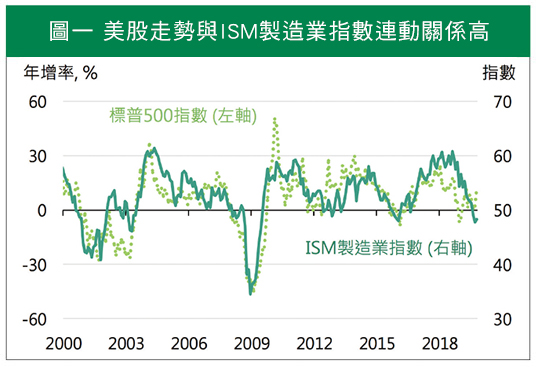
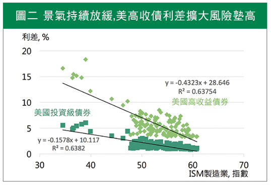

前景未明，股票、高收債風險漸增，美投資等級債不失為好選擇
台灣人為愛債一族。熱銷基金排行前10大，有9檔為債券型商品，前3名購買總額更是逼近1兆台幣。1兆台幣，是什麼樣的概念呢？簡單來說，這個金額已足夠把整個中華電信買下來。
你也買了債券型基金嗎？不管是否有配置，當前貿易戰未止、全球經濟成長減速、主要央行傾向寬鬆，各種訊息紛陳並列又混亂的此刻，你可能最想知道：這時候，買債券或債券型基金好嗎？
股市持續驚驚漲，衰退疑慮漸濃厚
資深投資人想必對零八年金融海嘯仍餘悸猶存。近20多年來幾乎十年一輪的股災，在金融海嘯屆滿十年的此刻，許多人可能恐懼衰退的到來，使台灣人更加畏懼股票型基金商品。
另一方面，民間對於不景氣越來越有感。菜市場的阿婆絮絮叨叨，嘴裡說著生意越來越難做；甚至連寶可夢玩家都能發現，許多掛著「補給站」的商家鐵門深鎖，門上出租的紅紙斑駁。這股經濟逐漸由盛而衰、由高走低的焦慮感，讓投資人更渴望收益穩定的投資標的。
最後，看看重要的經濟數據，或許我們擔心的景氣寒冬將至。反應美國景氣的ISM製造業指數，已跌破50這個重要的分水嶺；回顧歷史，美國景氣下滑時，美股表現多半亦轉差（見圖一）。如今，全球經濟衰退疑慮未除，屢創新高的股市，使投資人追高的信心漸弱。
換言之，對投資人而言，此時投資股市，恐怕將買在高點。

註：資料期間為2000/1-2019/10，月資料，兩者相關係數0.76
資料來源：Bloomberg
買債穩賺不賠？投資人需留意利差風險
然而，投資股市有風險，買債就穩賺不賠嗎？當然並非如此。以單純購買債券來說，基本上如果公司沒倒閉，無債務違約發生，一路持有至到期日，確實可規避利率起伏波動。但對於投資人而言，除了考慮債券價格與利率走勢的反向關係外，還需考量利差的變化。
舉例來說，假設美國10年期公債殖利率為2%（即基準利率），而某家美企發行2.5%公司債，兩者相差0.5%，此即「信用利差」。信用利差與企業信用評等成反比，評等越差、信用利差則越高。
當景氣下滑，央行政策傾向寬鬆，造成市場利率水準偏下移；同時，企業獲利成長力道轉弱，投資人將要求更高的信用利差，彌補債券違約的憂慮。因此，當利差擴大的幅度，大於基準利率下降的幅度，債券價格或債券型基金淨值將走低。
國人偏好的債券基金中，以美國高收益債為大宗。何謂高收益債？即先前提到的，信用評等較差、殖利率偏高的企業債。從歷史數據看來，美國製造業景氣放緩時，利差擴大風險將漸增，信用評等較差的美高收債，利差風險明顯高出許多（見圖二）。簡單來說，景氣好的時候不易倒帳，高收債具有高息收的吸引力；景氣轉弱時，信評差的企業倒債可能性漸增，利差擴大將拖累投資績效。

註：資料期間為2008/1-2019/10，月資料
資料來源：Bloomberg
股票、高收債風險漸增，美投資等級債相對優穩
此時該投資什麼好？讓我們從歷史學經驗。回顧過去，分別在衰退前一季、半年或一年，布局美股、美高收債及美投資等級債，檢視一年後的報酬狀況，投資等級債表現相對優穩（見表一）。這結論呼應了我們前面的推論。
時間靠近年底，投資人已默默開始尋找新的投資方向。面臨股市上方風險墊高、信評不佳的企業倒債機率漸增，若對未來一年景氣發展抱持著擔憂，不妨趁美中氛圍和緩、美債殖利率回彈，增建美投資等級債部位，作為中長期投資配置的標的。

註：衰退期間為1990/7-1991/3、2001/3-2001/11及2007/12-2009/6；美股為標普五百指数，債券報酬率以總報酬指数估算
資料來源：Bloomberg
【揭露事項與免責聲明】
本報告為國泰世華銀行（下稱“本公司”）提供尊貴理財客戶之參考資料，並非針對特定客戶所作的投資建議，且在本報告撰寫過程中，並未考量讀者個別的財務狀況與需求，故本報告所提供的資訊無法適用於所有讀者。
本報告係根據本公司所取得的資訊加以彙集及研究分析，本公司並不保證各項資訊之完整性及正確性。本報告中所提出之意見係為本報告出版當時的意見，邇後相關資訊或意見若有變更，本公司將不會另行通知。本公司亦無義務持續更新本報告之內容或追蹤研究本報告所涵蓋之主題。本報告中提及的標的價格、價值及收益隨時可能因各種本公司無法控制之政治、經濟、市場等因素而產生變化。本報告中之各項預測，均係基於對目前所得資訊作合理假設下所完成，所以並不必然實現。本報告不得視為買賣有價證券或其他金融商品的要約或要約之引誘。
國泰金融集團（下稱“本集團”）所屬各公司可能個別基於特定目的且針對特定人士出具研究報告、提供口頭或書面的市場看法或投資建議（下稱“提供資訊”），鑑於提供資訊之單位、時間、對象及目的不同，本報告與本集團其他單位所提供資訊可能有不一致或相牴觸之情事；本集團所屬公司從事各項金融業務，包括但不限於銀行、保險、證券經紀、承銷、自有資金投資、資產管理、證券投資信託等。本集團各公司對於本報告所涵蓋之標的可能有投資或其他業務往來關係，各公司從事交易之方向亦可能與本報告不一致，讀者應審慎評估自身投資風險，自行決定投資方針，不應以前述不一致或相抵觸為由，主張本公司或本集團其他成員有侵害讀者權益之情事。